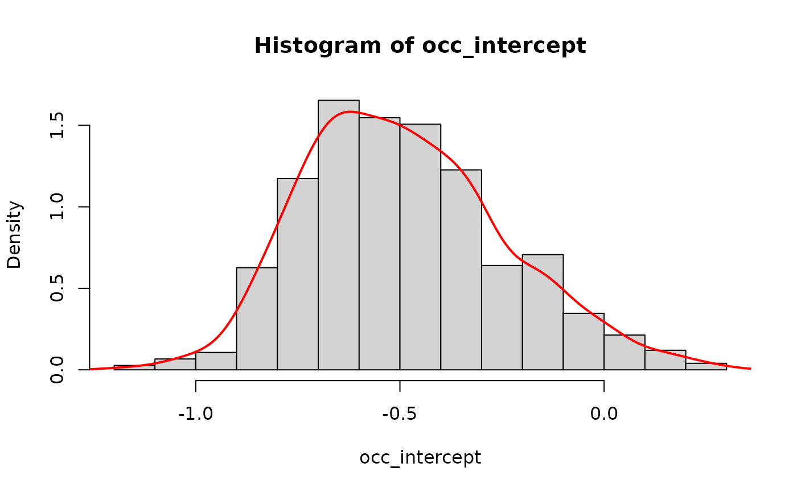
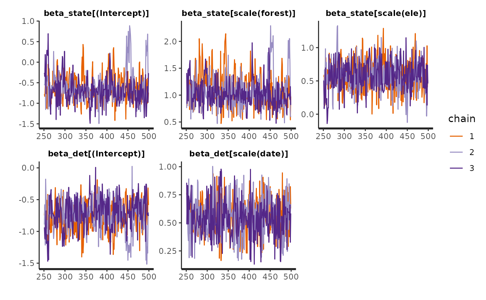
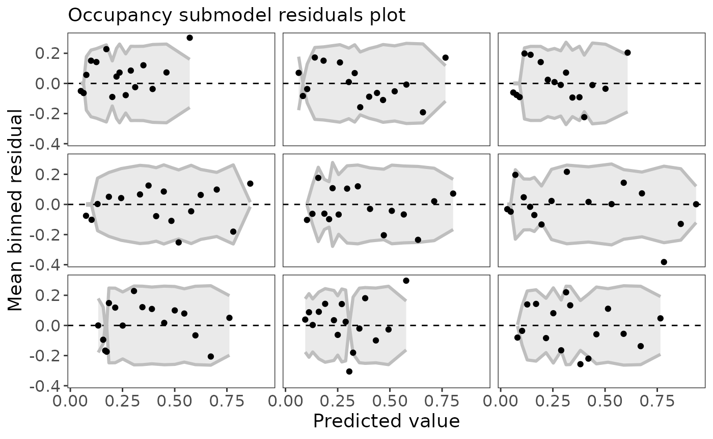
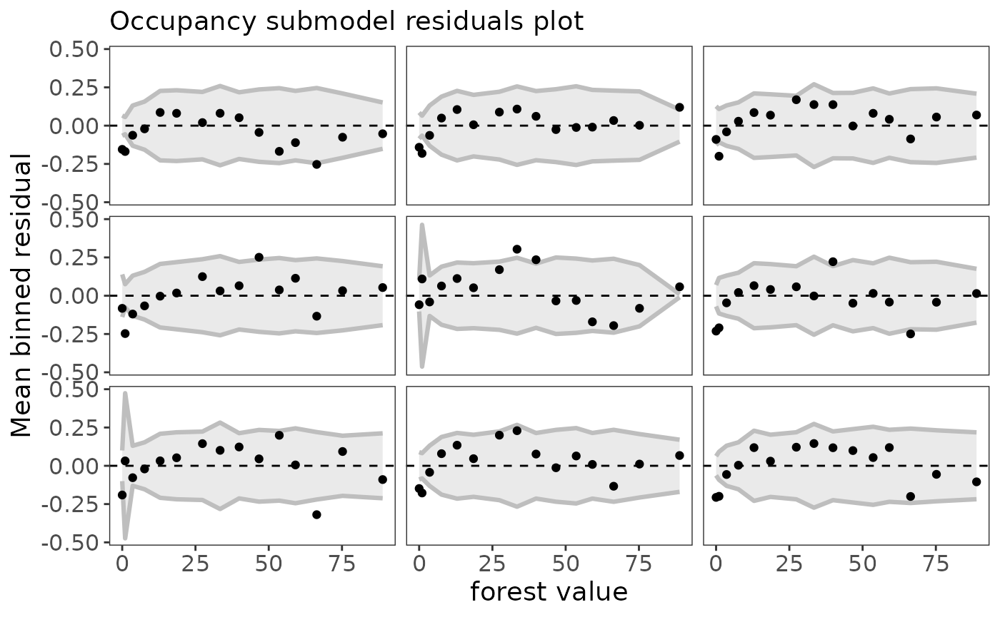
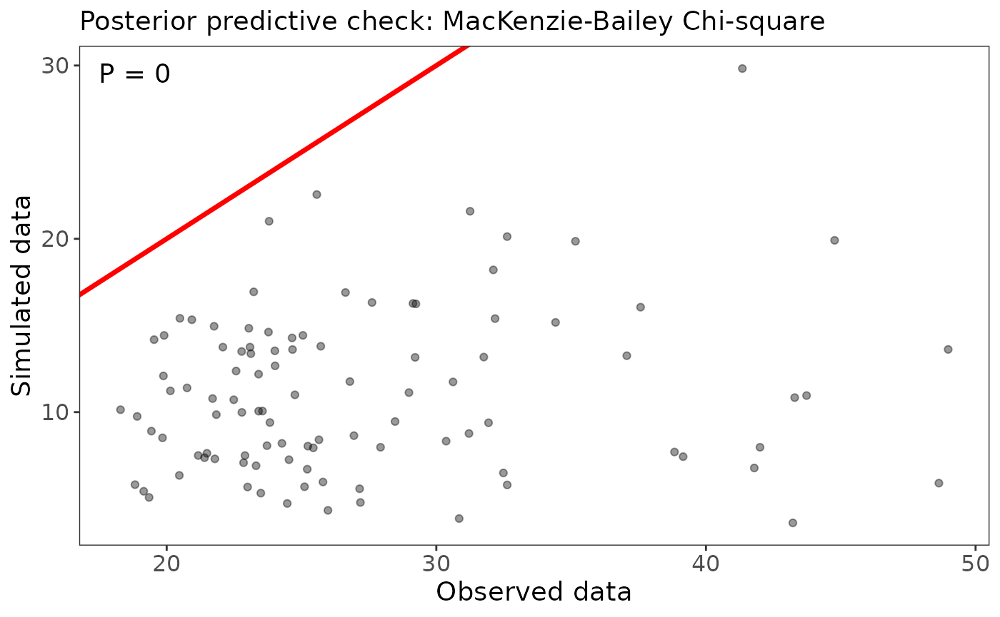
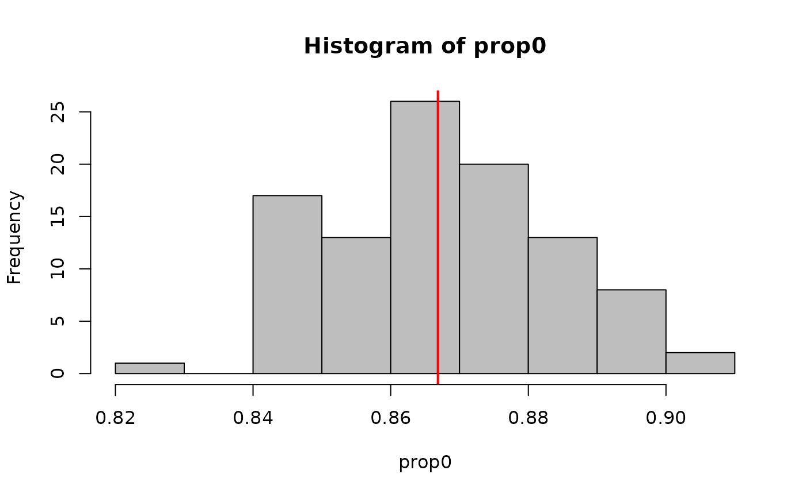
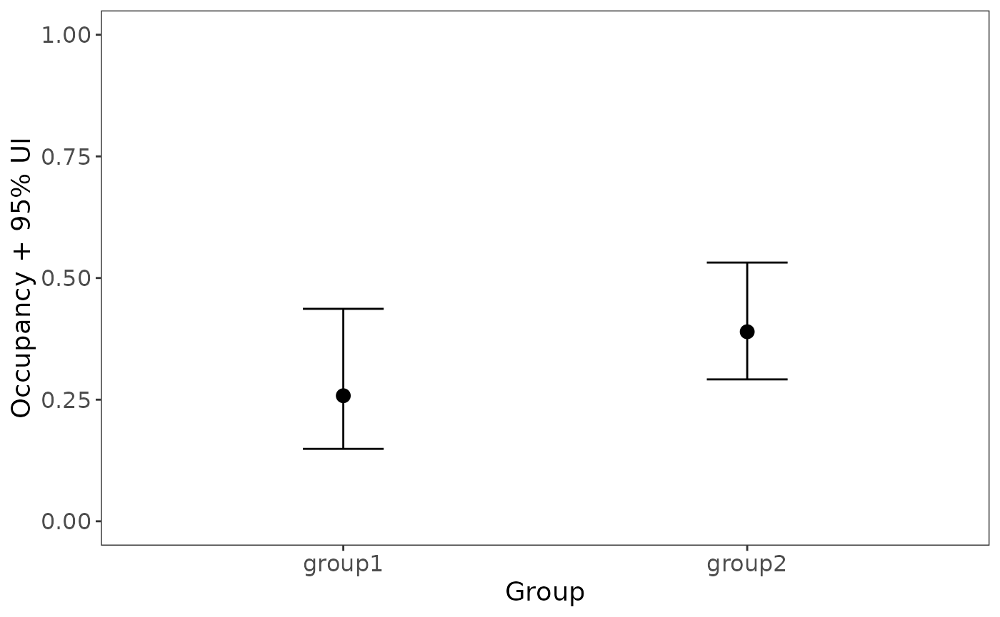

Introduction
What is ubms?
ubms is an R package for fitting models of wildlife occurrence and abundance to with datasets where animals are not individually marked. It provides a nearly identical interface to the popular unmarked package (Fiske, Chandler, and others 2011). Instead of using maximum likelihood to fit models (as with unmarked), models are fit in a Bayesian framework using Stan (Carpenter et al. 2017). It is generally expected that you are already familiar with unmarked when using ubms. You can download ubms, report issues, or help with development on Github.
Why should you use it?
There are several advantages to using ubms over unmarked. First, it is possible to include random effects in ubms models, which is not currently possible in unmarked. These are specified using the familiar syntax of lme4 (Bates et al. 2015). Second, ubms generates posterior distributions for model parameters, including latent occupancy and abundance parameters. These can be useful for post-hoc analyses and diagnostics. Finally, fitting models with Stan gives you access to the large ecosystem of Stan-related tools, such as LOO (leave-one-out-cross validation; (Vehtari, Gelman, and Gabry 2017)).
Another alternative to ubms would be to fit models in an existing modeling language such as BUGS, JAGS, or directly in Stan. ubms abstracts away the complex process of defining and writing custom models in these languages which need to be updated each time you make changes to your model. It also provides many useful helper functions (e.g. predict) which would otherwise require custom code. Finally, because of Stan’s efficient sampler (Hoffman and Gelman 2014) and because the underlying likelihoods in ubms are marginalized, ubms will often fit models much faster than equivalent models in BUGS or JAGS (Yackulic et al. 2020).
What are the disadvantages?
Relative to unmarked, ubms has fewer types of models available. For example, models that incorporate temporary emigration (like gdistsamp) (Chandler, Royle, and King 2011) are currently not available in ubms. Models should run much faster in unmarked as well. If you do not need one of the specific benefits of ubms described above, it makes sense to stick with unmarked. Even if you do plan to use ubms, it makes sense to test the models in unmarked first. The similar interface between the two packages makes this very easy, as you will see in the next section.
Relative to BUGS/JAGS/Stan, ubms is less flexible because you cannot customize your model structure. You are limited to the provided model types. Furthermore, you cannot currently customize prior distributions (although I plan to add this in the future in some form). Finally, writing your own BUGS/JAGS model can be valuable for gaining a deeper understanding of how a model works; ubms, like unmarked, is essentially a black box.
To summarize the advantages and disadvantages: I see ubms as an intermediate step along the continuum from unmarked to custom models in BUGS/JAGS. It is not meant to replace either approach but rather to supplement them, for situations when a Bayesian framework is needed and “off-the-shelf” model structures are adequate.
Example: Fitting a single-season occupancy model
Occupancy models estimate the probability \(\psi\) that a species occupies a site, while accounting for detection probability \(p < 1\) (MacKenzie et al. 2002). In order to estimate both \(p\) and \(\psi\), repeated observations (detection/non-detection data) at each site are required.
Set up the data
First, load the dataset we’ll be using, which comes with unmarked:
The crossbill dataset is a data.frame with many columns. It contains detection/non-detection data for the European crossbill (Loxia curvirostra) in Switzerland (Schmid, Zbinden, and Keller 2004).
dim(crossbill)
## [1] 267 58names(crossbill)
## [1] "id" "ele" "forest" "surveys" "det991" "det992" "det993"
## [8] "det001" "det002" "det003" "det011" "det012" "det013" "det021"
## [15] "det022" "det023" "det031" "det032" "det033" "det041" "det042"
## [22] "det043" "det051" "det052" "det053" "det061" "det062" "det063"
## [29] "det071" "det072" "det073" "date991" "date992" "date993" "date001"
## [36] "date002" "date003" "date011" "date012" "date013" "date021" "date022"
## [43] "date023" "date031" "date032" "date033" "date041" "date042" "date043"
## [50] "date051" "date052" "date053" "date061" "date062" "date063" "date071"
## [57] "date072" "date073"Check ?crossbill for details about each column. The first three columns id, ele, and forest are site covariates.
site_covs <- crossbill[,c("id", "ele", "forest")]
The following 27 columns beginning with det are the binary detection/non-detection data; 9 years with 3 observations per year. For this example we want to fit a single-season occupancy model; thus we will use only the first three columns (year 1) of det as our response variable y.
## det991 det992 det993
## 1 0 0 0
## 2 0 0 0
## 3 NA NA NA
## 4 0 0 0
## 5 0 0 0
## 6 NA NA NANote that missing values are possible. The final 27 columns beginning with date are the Julian dates for each observation. As with y we want only the first three columns corresponding to year 1.
date <- crossbill[,c("date991","date992","date993")]
Finally, we build our unmarkedFrame object holding our detection/non-detection data, site covariates, and observation covariates. Since we will conduct a single-season occupancy analysis, we need to use unmarkedFrameOccu specifically. The resulting unmarkedFrame can be used by both unmarked and ubms.
umf <- unmarkedFrameOccu(y=y, siteCovs=site_covs, obsCovs=list(date=date)) head(umf)
## Data frame representation of unmarkedFrame object.
## y.1 y.2 y.3 id ele forest date.1 date.2 date.3
## 1 0 0 0 1 450 3 34 59 65
## 2 0 0 0 2 450 21 17 33 65
## 3 NA NA NA 3 1050 32 NA NA NA
## 4 0 0 0 4 950 9 29 59 65
## 5 0 0 0 5 1150 35 24 45 65
## 6 NA NA NA 6 550 2 NA NA NA
## 7 0 0 0 7 750 6 26 54 74
## 8 0 0 0 8 650 60 23 43 71
## 9 0 0 0 9 550 5 21 36 56
## 10 0 0 0 10 550 13 37 62 75Fit a model
Fit the model in unmarked
First, we fit a null model (no covariates) in unmarked using the occu function. The occu function requires as input a double formula (for detection and occupancy, respectively) along with our unmarkedFrame.
(fit_unm <- occu(~1~1, data=umf))
##
## Call:
## occu(formula = ~1 ~ 1, data = umf)
##
## Occupancy:
## Estimate SE z P(>|z|)
## -0.546 0.218 -2.51 0.0121
##
## Detection:
## Estimate SE z P(>|z|)
## -0.594 0.208 -2.86 0.00426
##
## AIC: 511.2538Fit the model in ubms
Next, we fit the same model in ubms. The equivalent to occu in ubms is stan_occu. Functions in ubms generally use this stan_ prefix, based on the approach used in package rstanarm for GLMs. We need to provide the same arguments to stan_occu. In addition, we will specify that we want 3 MCMC chains (chains=3), with 300 iterations per chain (iter=300) of which the first half will be warmup iterations. It is beyond the scope of this vignette to discuss the appropriate number or length of chains; see the Stan user’s guide for more details. Generally 4 chains of 2000 iterations each is recommended (of which 1000 per chain are warmups). Thus, 300 iterations per chain is probably not enough, but to keep things running quickly it is sufficient for this vignette. Note that if you are more familiar with BUGS or JAGS, Stan generally requires a smaller number of iterations to reach convergence thanks to its default NUTS sampler (Hoffman and Gelman 2014). If you have a good multi-core CPU, you can run chains in parallel. Tell Stan how many parallel cores you want to use by assigning a value to the cores argument.
##
## Call:
## stan_occu(formula = ~1 ~ 1, data = umf, chains = 3, iter = 300,
## refresh = 0)
##
## Occupancy (logit-scale):
## Estimate SD 2.5% 97.5% n_eff Rhat
## -0.495 0.236 -0.889 -0.013 164 1.01
##
## Detection (logit-scale):
## Estimate SD 2.5% 97.5% n_eff Rhat
## -0.632 0.209 -1.04 -0.228 160 1.01
##
## LOOIC: 511.794
## Runtime: 0.933 secCompare results
The structure of the output from unmarked and ubms is intentionally similar. Estimates of the occupancy and detection parameters are also similar, but not identical. For a more direct comparison, call the coef function on both model objects:
## unmarked stan
## psi(Int) -0.5461203 -0.4949418
## p(Int) -0.5939612 -0.6316219Understanding the ubms output summary
Let’s look at the output from our fit_stan model again:
fit_stan##
## Call:
## stan_occu(formula = ~1 ~ 1, data = umf, chains = 3, iter = 300,
## refresh = 0)
##
## Occupancy (logit-scale):
## Estimate SD 2.5% 97.5% n_eff Rhat
## -0.495 0.236 -0.889 -0.013 164 1.01
##
## Detection (logit-scale):
## Estimate SD 2.5% 97.5% n_eff Rhat
## -0.632 0.209 -1.04 -0.228 160 1.01
##
## LOOIC: 511.794
## Runtime: 0.933 secThe first part (under Call:) is the command we used to get this model output. Underneath are two tables, one per submodel, corresponding to the occupancy and detection parts of the model. Within each table there is one row per parameter in the submodel. Since fit_stan had no covariates, there is only an intercept term for each submodel. Model parameters in this summary table are always shown on the appropriate transformed scale, in this case logit. To get the corresponding probabilities, you can use the predict function, which we will demonstrate later.
For each parameter, the mean and standard deviation of the posterior distribution are given. Unlike unmarked output, there is no \(Z\) or \(p\)-value. Instead, there is a 95% uncertainty interval provided.
The final two columns in each summary table n_eff and Rhat are MCMC diagnostics. We will discuss their meaning later.
Extracting individual parameters
To extract summary values into an R table for easy manipulation, use the summary method. Note that you have to specify which submodel you want ("state" for occupancy or "det" for detection).
sum_tab <- summary(fit_stan, "state") sum_tab$mean[1]
## [1] -0.4949418To extract the entire posterior for a parameter, use the extract method. To avoid name collisions you need to use the full name of the parameter (which contains both the submodel and the parameter name) when extracting. To see a list of the available full parameter names, use the names method.
names(fit_stan)
## [1] "beta_state[(Intercept)]" "beta_det[(Intercept)]"occ_intercept <- extract(fit_stan, "beta_state[(Intercept)]")[[1]] hist(occ_intercept, freq=FALSE) lines(density(occ_intercept), col='red', lwd=2)

Compare candidate models
Now we’ll fit two candidate models to the crossbill data in ubms and compare them.
Fit the models
Along with our previous null model, we’ll fit a “global” model with both site and observation covariates. This is just an example; perhaps other models should also be considered if we were preparing this analysis for publication. In our model formulas, we have normalized all covariates with scale so they have a mean of 0 and a standard deviation of 1. This can help improve model convergence and is generally a good idea.
fit_null <- fit_stan fit_global <- stan_occu(~scale(date)~scale(forest)+scale(ele), data=umf, chains=3, iter=300)
## Warning: The largest R-hat is 1.09, indicating chains have not mixed.
## Running the chains for more iterations may help. See
## http://mc-stan.org/misc/warnings.html#r-hat## Warning: Bulk Effective Samples Size (ESS) is too low, indicating posterior means and medians may be unreliable.
## Running the chains for more iterations may help. See
## http://mc-stan.org/misc/warnings.html#bulk-ess## Warning: Tail Effective Samples Size (ESS) is too low, indicating posterior variances and tail quantiles may be unreliable.
## Running the chains for more iterations may help. See
## http://mc-stan.org/misc/warnings.html#tail-ess## Warning: Some Pareto k diagnostic values are slightly high. See help('pareto-k-diagnostic') for details.The fit_global model gave us some warnings about the effective sample size (n_eff) along with a suggested solution. We will ignore this warning for now but normally it is a good idea to pay close attention to these warnings.
Compare the models
First we combine the models into a fitList:
mods <- fitList(fit_null, fit_global)
Then we generate a model selection table:
## elpd nparam elpd_diff se_diff weight
## fit_global -237.864 7.387 0.000 0.000 0.922
## fit_null -255.897 2.426 -18.033 6.616 0.078Instead of AIC, models are compared using leave-one-out cross-validation (LOO) (Vehtari, Gelman, and Gabry 2017) via the loo package. Based on this cross-validation, the expected predictive accuracy (elpd) for each model is calculated. The model with the largest elpd (fit_global) performed best. The elpd_diff column shows the difference in elpd between a model and the top model; if this difference is several times larger than the standard error of the difference (se_diff), we are confident the model with the larger elpd performed better. LOO model weights, analogous to AIC weights, are also calculated. We can see that the fit_global model is clearly the best performing model.
You can obtain LOO information for a single model using the loo method:
loo(fit_global)
##
## Computed from 450 by 245 log-likelihood matrix
##
## Estimate SE
## elpd_loo -237.9 19.3
## p_loo 7.4 0.8
## looic 475.7 38.5
## ------
## Monte Carlo SE of elpd_loo is 0.5.
##
## Pareto k diagnostic values:
## Count Pct. Min. n_eff
## (-Inf, 0.5] (good) 243 99.2% 11
## (0.5, 0.7] (ok) 2 0.8% 21
## (0.7, 1] (bad) 0 0.0% <NA>
## (1, Inf) (very bad) 0 0.0% <NA>
##
## All Pareto k estimates are ok (k < 0.7).
## See help('pareto-k-diagnostic') for details.The looic value is analogous to AIC.
You can also obtain the WAIC (Widely Applicable Information Criterion) if you prefer (Vehtari, Gelman, and Gabry 2017):
waic(fit_global)
##
## Computed from 450 by 245 log-likelihood matrix
##
## Estimate SE
## elpd_waic -237.8 19.3
## p_waic 7.3 0.8
## waic 475.6 38.5Diagnostics and model fit
We’ll define the global model as our top model:
fit_top <- fit_global fit_top
##
## Call:
## stan_occu(formula = ~scale(date) ~ scale(forest) + scale(ele),
## data = umf, chains = 3, iter = 300, refresh = 0)
##
## Occupancy (logit-scale):
## Estimate SD 2.5% 97.5% n_eff Rhat
## (Intercept) -0.445 0.709 -1.1199 1.41 14.9 1.18
## scale(forest) 1.258 0.742 0.5562 3.36 13.7 1.18
## scale(ele) 0.553 0.259 0.0233 1.05 286.7 1.02
##
## Detection (logit-scale):
## Estimate SD 2.5% 97.5% n_eff Rhat
## (Intercept) -0.807 0.288 -1.530 -0.323 21.8 1.11
## scale(date) 0.569 0.183 0.205 0.902 245.7 1.02
##
## LOOIC: 475.727
## Runtime: 1.467 secMCMC diagnostics
Again looking at the summary of fit_top, we conclude MCMC chains have converged if all \(\hat{R} > 1.05\). To visualize convergence, look at the traceplots:

Our effective sample size n_eff is lacking for some parameters as we were previously warned. The rule of thumb is to have n_eff > 100 * number of chains (300). The easy solution would be to re-run this model with more iterations.
Model fit
Calculating residuals is tricky for occupancy models. There isn’t one widely accepted way of doing it. ubms implements the approach of Wright (Wright, Irvine, and Higgs 2019) in which residuals are calculated separately for the state and observation processes. To quickly plot residuals against fitted values, use the plot method:
plot_residuals(fit_top, submodel="state")

Note that the residuals are automatically binned, which is appropriate for a binomial response (Gelman and Hill 2007). If the model fits the data well, you would expect 95% of the binned residual points to fall within the shaded area. You can also plot residuals against covariate values using the plot_residuals function:
plot_residuals(fit_top, submodel="state", covariate="forest")

ubms also supports goodness-of-fit tests (posterior predictive checks) for some models. In the case of occupancy models, there is support for the MacKenzie-Bailey (M-B) chi-square test (MacKenzie and Bailey 2004) via the gof function. For each posterior draw, the M-B statistic is calculated for the actual data and for a simulated dataset. The proportion of draws for which the simulated statistic is larger than the actual statistic should be near 0.5 if the model fits well.
(fit_top_gof <- gof(fit_top, draws=100, quiet=TRUE))
## MacKenzie-Bailey Chi-square
## Point estimate = 29.615
## Posterior predictive p = 0plot(fit_top_gof)

Our model does not appear to fit well based on this posterior predictive check. The first step to addressing this would be to run the model for more iterations to make sure that isn’t the reason.
You can use the posterior_predict function to simulate new datasets, which you can use to calculate your own fit statistic. The following command generates 100 simulated datasets.
sim_y <- posterior_predict(fit_top, "y", draws=100) dim(sim_y)
## [1] 100 801The output is a matrix with dimensions draws x observations (in site-major order). As an example, we can calculate the proportion of zeros in each simulated dataset
and compare that to the proportion of zeros in the actual dataset.
actual_prop0 <- mean(getY(fit_top) == 0, na.rm=TRUE) #Compare hist(prop0, col='gray') abline(v=actual_prop0, col='red', lwd=2)

Model inference
Marginal covariate effects
Based on the 95% uncertainty intervals, both forest and elevation have a positive effect on occupancy probability (both intervals do not contain 0). Similarly, Julian date has a positive impact on detection probability. We can quickly visualize these marginal covariate effects with the plot_effects function:
plot_effects(fit_top, "state")

plot_effects(fit_top, "det")
Predict parameter values
As with unmarked, we can get the predicted \(psi\) or \(p\) for each site or observation using the predict function. For example, to get occupancy:
## Predicted SD 2.5% 97.5%
## 1 0.08334221 0.04361936 0.02462050 0.1811980
## 2 0.16805816 0.10231431 0.06755380 0.4519405
## 3 0.33650343 0.13227040 0.20127876 0.7553090
## 4 0.14627988 0.05224903 0.07031803 0.2745248
## 5 0.38264397 0.13701621 0.24028094 0.8091472
## 6 0.08576430 0.04205705 0.02662729 0.1842538You can also supply newdata as a data.frame.
nd <- data.frame(ele=100, forest=25) predict(fit_top, submodel="state", newdata=nd)
## Predicted SD 2.5% 97.5%
## 1 0.1597266 0.1255428 0.04785032 0.5641471Simulate latent occupancy states
One of the advantages of BUGS/JAGS is that you can directly model latent parameters, such as the true unobserved occupancy state of a site \(z\). Using the posterior_predict function in ubms, you can generate an equivalent posterior distribution of \(z\).
zpost <- posterior_predict(fit_top, "z", draws=100) dim(zpost)
## [1] 100 267The output has one row per posterior draw, and one column per site. The posterior of \(z\) can be useful for post-hoc analyses. For example, suppose you wanted to test for a difference in mean occupancy probability between sites 1-50 and sites 51-100:
group1 <- rowMeans(zpost[,1:50], na.rm=TRUE) group2 <- rowMeans(zpost[,51:100], na.rm=TRUE) plot_dat <- rbind(data.frame(group="group1", occ=mean(group1), lower=quantile(group1, 0.025), upper=quantile(group1, 0.975)), data.frame(group="group2", occ=mean(group2), lower=quantile(group2, 0.025), upper=quantile(group2, 0.975)))
Now plot the posterior distributions of the two means:
library(ggplot2) ggplot(plot_dat, aes(x=group, y=occ)) + geom_errorbar(aes(ymin=lower, ymax=upper), width=0.2) + geom_point(size=3) + ylim(0,1) + labs(x="Group", y="Occupancy + 95% UI") + theme_bw() + theme(panel.grid.major=element_blank(), panel.grid.minor=element_blank(), axis.text=element_text(size=12), axis.title=element_text(size=14))

References
Bates, Douglas, Martin Mächler, Ben Bolker, and Steve Walker. 2015. “Fitting Linear Mixed-Effects Models Using Lme4.” Journal of Statistical Software 67 (1). https://doi.org/10.18637/jss.v067.i01.
Carpenter, Bob, Andrew Gelman, Matthew D. Hoffman, Daniel Lee, Ben Goodrich, Michael Betancourt, Marcus Brubaker, Jiqiang Guo, Peter Li, and Allen Riddell. 2017. “Stan: A Probabilistic Programming Language.” Journal of Statistical Software 76 (1). https://doi.org/10.18637/jss.v076.i01.
Chandler, Richard B., J. Andrew Royle, and David I. King. 2011. “Inference About Density and Temporary Emigration in Unmarked Populations.” Ecology 92 (7): 1429–35. https://doi.org/10.1890/10-2433.1.
Fiske, Ian, Richard Chandler, and others. 2011. “Unmarked: An R Package for Fitting Hierarchical Models of Wildlife Occurrence and Abundance.” Journal of Statistical Software 43 (10): 1–23. https://doi.org/10.18637/jss.v043.i10.
Gelman, Andrew, and Jennifer Hill. 2007. Data Analysis Using Regression and Multilevel/Hierarchical Models. New York, NY: Cambridge University Press.
Hoffman, Matthew D, and Andrew Gelman. 2014. “The No-U-Turn Sampler: Adaptively Setting Path Lengths in Hamiltonian Monte Carlo.” Journal of Machine Learning Research 15 (1): 1593–1623.
MacKenzie, Darryl I., and Larissa L. Bailey. 2004. “Assessing the Fit of Site-Occupancy Models.” Journal of Agricultural, Biological, and Environmental Statistics 9 (3): 300–318. https://doi.org/10.1198/108571104x3361.
MacKenzie, Darryl I., James D. Nichols, Gideon B. Lachman, Sam Droege, J. Andrew Royle, and Catherine A. Langtimm. 2002. “Estimating Site Occupancy Rates When Detection Probabilities Are Less Than One.” Ecology 83 (8): 2248–55. https://doi.org/10.1890/0012-9658(2002)083[2248:esorwd]2.0.co;2.
Schmid, Hans, Niklaus Zbinden, and Verena Keller. 2004. “Überwachung Der Bestandsentwicklung Häufiger Brutvögel in Der Schweiz.” Swiss Ornithological Institute Sempach Switzerland.
Vehtari, Aki, Andrew Gelman, and Jonah Gabry. 2017. “Practical Bayesian Model Evaluation Using Leave-One-Out Cross-Validation and WAIC.” Statistics and Computing 27 (5): 1413–32. https://doi.org/10.1007/s11222-016-9696-4.
Wright, Wilson J., Kathryn M. Irvine, and Megan D. Higgs. 2019. “Identifying Occupancy Model Inadequacies: Can Residuals Separately Assess Detection and Presence?” Ecology, e02703. https://doi.org/10.1002/ecy.2703.
Yackulic, Charles B., Michael Dodrill, Maria Dzul, Jamie S. Sanderlin, and Janice A. Reid. 2020. “A Need for Speed in Bayesian Population Models: A Practical Guide to Marginalizing and Recovering Discrete Latent States.” Ecological Applications 30 (5). https://doi.org/10.1002/eap.2112.